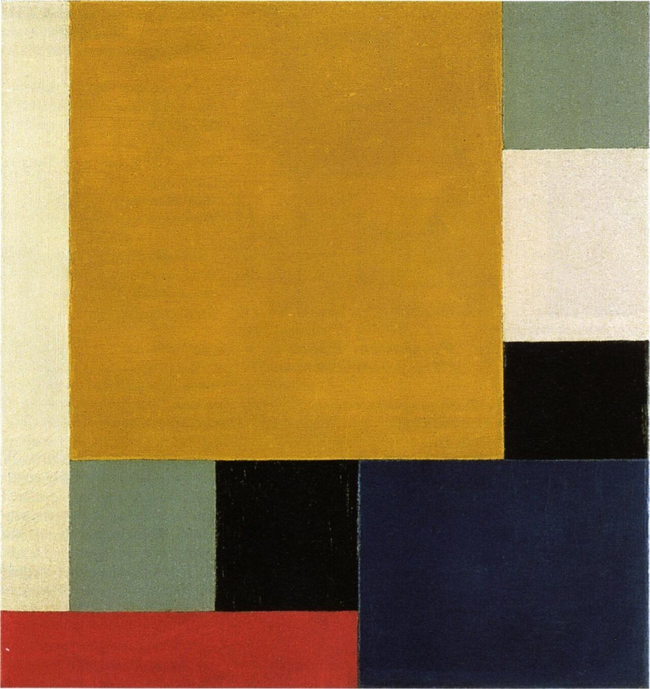

References / Painting / 148
Composition XXII
Theo van Doesburg’s version of the neoplastic canvas: flat rectangles that meet edge to edge, with no black lines between them.
- Source
- Wikimedia Commons: Theo van Doesburg, Composition XXII (Van Abbemuseum)
- Creator
- Theo van Doesburg
- Made
- June–July 1922 per the Commons record (after Hoek’s catalogue); older exhibition catalogues date it 1920
- Style
- De Stijl (agent-proposed, not yet reviewed by a person)
- Moods
- Solid, balanced, earthy
- Evidence
- Inspected the Commons image (1447 × 1532 px, viewed at 1280 px) of the painting in the Van Abbemuseum, Eindhoven. The Commons record cites the museum’s old collection site as its source; the current museum record was not checked.
- Reviewed
- Rights
- Open license, stored. License: public domain. Rights policy

Context
Oil on canvas, 45.5 × 43.3 cm, Van Abbemuseum, Eindhoven, bought in 1966. The first owner was Thijs Rinsema of Drachten, who acquired it from van Doesburg in 1922. Commons.
Exhibition catalogues listed on Commons date it 1920, 1920–1922, or about 1925. Commons.
Observed
- A large ochre-yellow square fills most of the upper left and center.
- Two gray-green planes sit at the top right and the lower left; off-white strips run down the left edge and at the right.
- Two black rectangles, one at right and one below the ochre square, touch other planes directly.
- A dark blue plane fills the lower right, and a red strip runs along the bottom left edge.
- There are no lines: every plane meets its neighbor edge to edge. Canvas texture shows through the paint.
Why it belongs
This is the same grammar as Mondrian’s 1920–1921 canvases with the black lines removed. It shows that the lines are Mondrian’s signature more than a rule of the whole movement.
The earthy ochre and the gray-green show that the strict primaries were a direction, not yet a fixed rule, in van Doesburg’s painting of these years.
Borrow
Tile a layout with flat rectangles that touch without gaps or borders, and let one large plane dominate.
Use black as a solid block among colored blocks instead of as lines.
Measured
Machine-extracted by tools/image-traits.py on . Full measurement.
- Mean chroma
- 0.37
- Palette
- #be871f 44%
- #1f2133 14%
- #ede4ba 10%
- #0b0a06 8%
- #ab3123 6%
- #737f61 5%
- #818b6e 4%
- #e5daab 3%

